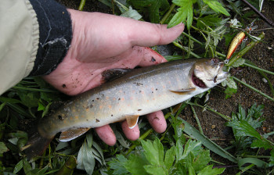

釣行日誌 故郷編
2013/07/14 夏の雨、猿と雨宿り
いつもの橋詰めのバス停に車を停めたのは、午前11時であった。わくわくと胸を震わせながら身支度をして、本年度最初の高原の川に降りていく。今日のこの川は少し増水していて、良い感じである。
最初の二段堰堤で、いつもは場所を譲ってくれる叔父が、今日は自分でずんずんと釣り始める。
『ええ？ 叔父さん、今日はどうしたのかなぁ？』
と思って見ていると、下段の落ち込みでポンポンと２尾釣り上げた。どちらもアベレージサイズのイワナである。これを見て俄然やる気になり、上段の激しく白泡が立っている落ち込みを狙う。しかし、水流が激しすぎて思うような深さにミノーを通すことができない。これはちょっと難しいなぁと思っていると、背後ではまた叔父が２尾釣り上げた。今日は叔父の日かもしれない。
このポイントは、藪で下流へ歩けないため、上流へ引き返し、40メートルほど先の大滝を狙う。おそらく最初の二段堰堤が魚止めになっているからだろう、その大滝の滝壺はいつもあまり魚影を見たことがないのだが、念には念を入れて、探ってみることにする。釣りの光景としては申し分無いが、青黒く広がる淵からは生体反応は無い。二人は渕尻に出てきている沢から田んぼへと這い上がり、車に戻る。ここからは叔父得意の Run & Gun スタイルで釣り歩くのだ。
三年ほど前に、放流直後に遭遇して、バカ当たりをした水管橋のポイントへ来た。叔父は車を停めた右岸側から、僕は橋を渡って左岸側から川に降りる。ここにも取水堰堤があり、ちょっとした滝壺ができている。白泡の中にミノーを打ち込み、渕尻まで引いてくる。茶色の魚影がちらっとルアーの背後に見える。
『出たっ！』
しかし、その魚は食い付くことなくゆっくりと身を翻して深みへ消えた。対岸の浅瀬も狙ってみたが反応は無い。コンクリート護岸を降りて、橋下の僕の好きな荒瀬を目指す。長い距離にわたって荒瀬が続くこのポイントでは、いつもなにがしらの反応が得られているのだ。ミノーを下流へ飛ばし、急流に逆らいながらゆっくりと上流へ引き戻してくる。水流が作るミノーの震動がロッドティップに伝わってくる。が、反応は無い。５歩下って再度キャスト、５歩下ってキャストを繰り返していると、とうとう荒瀬が終わって普通の瀬になってしまった。
『うーん？ 今日は出が悪いなぁ....』
振り返ると、叔父が水管橋のポイントをしつこく攻めている。僕は引き返して叔父に、
「今日は出んねぇ」
と告げると、
「そうかぁ？ 俺ここで１尾釣ったぞ」
と、こともなげに言う。またしても、自分の攻めた後で釣られてしまった。これは悔しい。キャリアの差をまざまざと見せつけられる。
再び二人は車に乗り込み、次のポイントを目指す。だんだら瀬の上流のポイントでは、魚の影すら見えず、二人とも無言で車に引き返す。車は下流へと向かい、ゴルフ場の橋まで来た。さすがに人気河川のこの川で、しかも三連休の中日とあってはどこも釣り人の車で賑わっている。どのポイントも、それらしい車が停まっており、僕たちは車を停めるチャンスを逃してばかりである。
「しょうがない。別の川に行こう」
叔父がそう言いだして、車は峠の方向に向きを変える。この高原は、近くに何本か川が流れており、こうなった時に作戦転換が可能なのだ。しかし、峠を越える辺りから降ってきた雨は、別の川に着く頃には雨脚が強まり、車を廃校前に停めたときにはどしゃ降りとなってしまった。仕方がないので車中でしばし雨宿りをして、小雨になるのを待つ。けれど、雨は弱まる気配が無く、依然として車の窓を大粒の雨が叩いている。
「しょうがない。釣るか！」
という叔父の一言で僕も気合いを入れ、僕は雨中へと竿を持って歩き出した。ここから先は、二人は別の区間を釣ることにして、叔父は下流へと車で遠ざかって行く。僕はレインハットの庇から落ちる雨を見ながら、この川の堰堤のポイントへ向かう。草むらをかき分け、用水路に落ちないように気をつけ、河原に降りる。しかし、この雨で増水が始まり、上流から茶色の濁りが入った今のこの川では、引いてくるルアーが見えない。これじゃぁ魚にも見えていないだろう。さっきの気合いがみるみる失せていく。堰堤下の落ち込み、その下の瀬、しばらく引いてみたものの、魚が釣れる気配もない。流れは濁流。
『こりゃ、アカン』
あっけなくその場での釣りをあきらめ、降りてきた崖を再び登り、叔父と約束した合流点の橋へと歩き出す。いっこうに弱まることのない雨を恨みながら、田んぼの中の一本道を歩いて合流点へと向かう。しかし、叔父の車はどこにも見あたらず、僕は途方に暮れる。ふと見ると、バス停に屋根の着いた待合所があるのが目に入った。あそこで雨宿りをしようと歩いて行き、ロッドを待合所の中の壁に立てかけて、一息ついた。時折車が通るが、叔父の青いスズキではない。早く雨が止んで、濁流が収まらないかなぁと思って前を見ると、なにやら金網を張った小屋が見えた。かなり大きな小屋だったが、その広い空間の中に、板が一枚渡してあり、その上に１尾の猿がいた。
『あれぇ？ あんな所に猿が居る....』
雨の中、道路を渡って近づいてよく見るとそこは、かつてガソリンスタンドがあった場所で、敷地の半分くらいが猿の金網小屋になっている。こんだけ広ければ、運動には不自由しないであろう。猿は、キュウリやトマトを与えられて、黙々とエサを食べている。僕が近づいても騒ぐことなく、おとなしく午後の食事を楽しんでいる。が、しかし、彼（彼女）が本当に楽しんでいるかどうかはわからない。猿を見つめると、物悲しそうな目で見つめ返してきた。僕は再びバス停の待合所に戻り、遠くから猿を見つめた。幼い頃から捕らえられてあの小屋の中で成長したのか、それとも大きくなってから群れを離れて捕まったのか？ 本当のことはわからないが、降りしきる雨の中、猿と雨宿りをしたひとときであった。
30分ほども待っただろうか。青いスズキが目の前を横切り、国道の方へ走っていった。僕は慌ててロッドをつかみ後を追う。車は橋詰めで停まりＵターンをしてゆっくり戻って来た。
「どこへ行ってたの？」
「ああ、合流点は濁りがひどかったから、上流の村はずれまで行って様子を見てきた」
叔父はそう答え、次に入るべきポイントを提案してきた。
「濁りが入っていないだろうから上流に行って見よう」
畑の中に一本の沢が出てきているポイントで入渓することとし、空き地に車を停めた。ここは道路と川が平行しており、護岸の上から川が見下ろせる。叔父は、
「ちょっと行って釣って来い」
と言って、護岸の上から僕が釣るところを見ていると言う。僕は沢の流れ込み脇から本流へ入り、流れ込みの深みにミノーを投射した。水の色は濁っているが、濁流と言うほどではない。深みでは反応が無かったが、渕尻のポイントで、心地よいアタリがあり、アベレージサイズのイワナが上がってきた。適度な濁りが魚に活性を与えているらしい。同じポイントでもう１尾釣り、道路の叔父を見ると、にっこり笑ってくれた。僕の様子を見て、叔父も釣る気になったらしく、下流へ歩き出した。僕はそこからさらに釣り下る。ここぞと思うポイントでは必ず反応があり、竿が曲がった。
取水堰堤まで釣り下ると、叔父が堰堤下の深みを釣っていた。そこで叔父は良い型のイワナを釣ったらしい。そこから下流は濁りが激しいので、さっき入渓したポイントよりもさらに上流を目指して歩き出す。車に戻って数百メートル上流へ移ると、対岸へ渡る橋が架かっていたので、対岸の空き地に車を停めた。今度も叔父は、護岸の上から見ているというので、石積みをへづって降りて河原に立つ。上から見ている叔父が、
「居る居る！」
と呼び掛けてきた。おお！これはサイトフィッシングだ！ と緊張し、叔父の指差す辺りにルアーをキャストする。グングンと大きくロッドアクションを加えて引いてくると、叔父が、
「ああっ喰わんかった！ もう少し大人しく引いてみろ！」
と叫ぶ。どうやらアクションが大きすぎて、ドジなイワナがミノーを咥え損なったらしい。今度は同じポイントへ投げ、ほとんどアクションは付けずに棒引きで引いてくる。もうじき引き終わる位置で、ぐいっとアタリがあり、ロッドがぎゅんっと引き込まれる。
『やったァ！』
心中で叫び、心地よく踊る魚体をいなす。アベレージよりは少し大きい。ネットは持っていないので、草むらに引き上げ、写真を写す。

護岸の上から叔父が声を掛けてくれ、携帯電話で写真を撮ってくれた。
その後、さらに上流を攻めると、可愛いアマゴが２尾釣れた。八つ、九つ、十、十一、今日は「つ」が抜けて、十１尾釣れた。久しぶりの大漁であった。
帰途、車中で叔父に、猿を見た話しをした。一部始終を話した後、叔父に、
「あの猿、小屋の中で暮らすのと、自然の中で暮らすのと、どっちが幸せかねぇ？」
と尋ねると、
「そりゃぁ自然の中さ」
と答えた。囚われの身で暮らす猿のことを思い出し、僕は複雑な気持ちになった。
今もあの猿は、小屋の中で孤独を噛みしめているのだろうか？
釣行日誌 故郷編 目次へ
サイトマップ
ホームへ
お問い合わせ